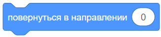
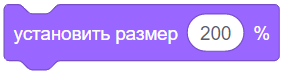
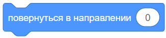
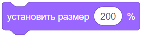
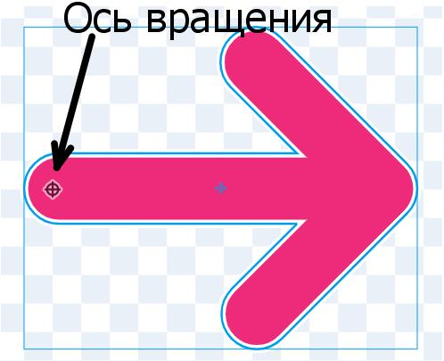
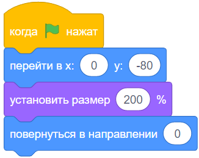

Этапы:
Этап 1
1
Что это за задача?
Упражняемся использовать циклы, за одно используем блоки повернуть.
Описание задания:
Нажми на флажок.
2
Не всё сразу!
Давай начнём с самого простого.
 




3
Стартовые настройки для стрелочки:
Проверь себя - всё ли ты сделал:
готово:
Добавь спрайт стрелочки;
Установи центр вращения стрелки в нужном месте;
(Выше было указано подробнее)
Установи стрелке размер побольше;
(Просто для наглядности)
Установи стрелке стартовую позицию;
(Примерно в центре экрана)
Поверни стрелку на 0 градусов.
(Чтобы она смотрела вверх)